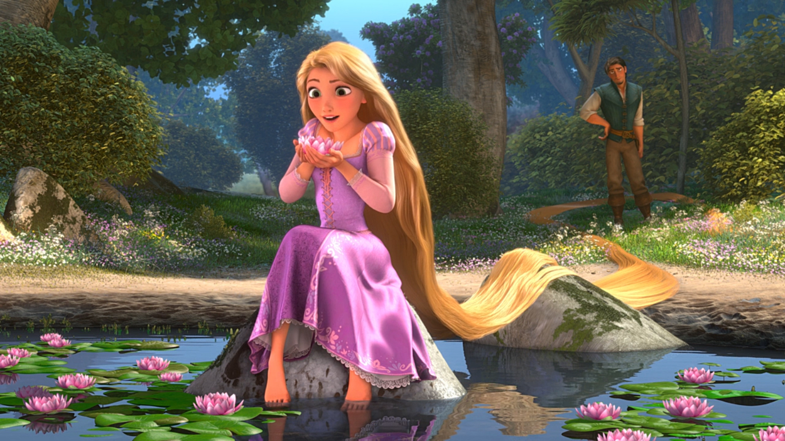
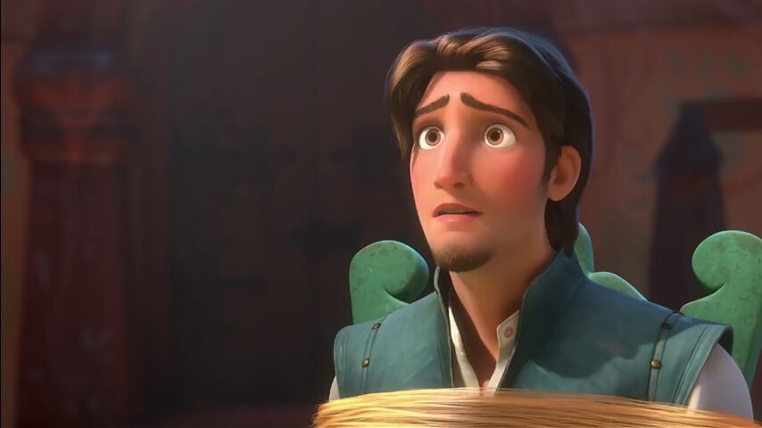
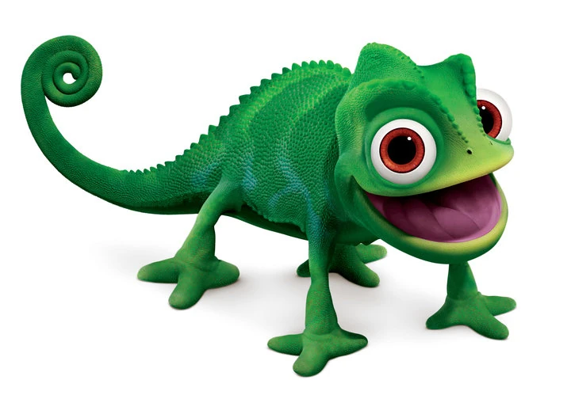

“Enrolados” conta a história de Rapunzel, uma jovem princesa de longos cabelos dourados mágicos que vive trancada em uma torre por Mãe Gothel. Quando um ladrão encantador chamado Flynn Rider entra em sua torre, ela embarca em uma incrível aventura para descobrir o mundo lá fora e seu verdadeiro destino.

A princesa de cabelos mágicos que sonha em conhecer o mundo fora da torre.

Um ladrão carismático que acaba ajudando Rapunzel em sua jornada.

O fiel camaleão e melhor amigo de Rapunzel.